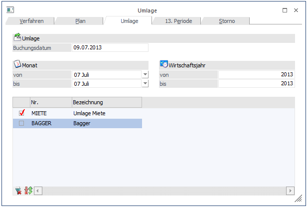
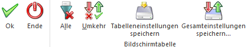
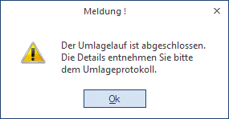
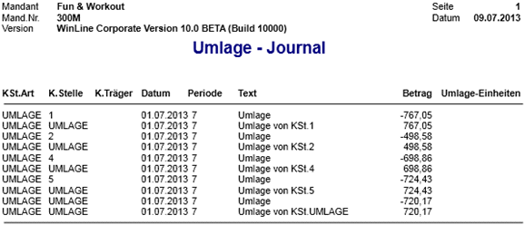

Im Register Umlage erhalten Sie alle vorhandenen Umlagepläne vorgeschlagen. Beim Öffnen des Menüs Umlage gelangen Sie standardmäßig in das Register Umlage, um sofort die Umlageläufe starten zu können. Sämtliche Umlagepläne für die Umlage von Istkosten bzw. Plankosten werden hier angezeigt.
Die Umlagen werden genau in der Reihenfolge durchgeführt, in der sie hier aufgelistet sind. Die Reihenfolge der Umlageschritte ist wesentlich für die vollständige und saubere Entlastung der Kostenstellen. Es kann ohne weiteres eine Kostenstelle mehrfach umgelegt werden, wenn sie zwischendurch von anderen Kostenstellen Belastungen erhält - es muss nur entsprechende Planschritte in der richtigen Reihenfolge dazu geben. Um die Reihenfolge zu ändern, wechseln Sie in das Register "Plan". Dort können Sie durch Anklicken des Umlageplans mit "Drag & Drop" (also anklicken und mit der Maus an die Stelle ziehen und fallen lassen, an der Sie den Planschritt haben möchten) die Reihung beliebig und jederzeit verändern.
Achtung
Sobald irgendwelche Parameter an der Umlage geändert wurden, kann es sinnvoll sein, die Umlage nochmals durchzuführen, damit die alte Umlage gelöscht wird, und aufgrund der neuen Parameter die neue Umlage (z.B. andere Reihung der Planschritte) durchgeführt wird.

Ø Buchungsdatum
Als Buchungsdatum wird das Systemdatum vorgeschlagen.
Dieses können Sie manuell überschreiben.
Ø Monat / Jahr von - bis
Standardmäßig werden das Buchungsdatum und die Umlageperiode laut Systemdatum vorgeschlagen. Manuell können mehrere Monate ausgewählt werden.
In den Feldern "Jahr von - bis" muss für die entsprechenden Auswertungen das Mandantenjahr (lt. Einstellung Mandantenstamm/Periodendefinition) eingetragen werden!
Beispiel
Ist die Laufzeit eines Wirtschaftsjahres von 01.05.2012 bis 30.04.2013 definiert, und sollte für den Dezember 2012 eine Umlage gefahren werden, so muss in den Feldern "von - bis" jeweils das Mandantenjahr = 2013 eingetragen sein.
Wenn Sie eine Umlage über mehrere Perioden auswählen (z.B. von Per. 08 bis Per. 11) wird pro Monat eine eigene Umlage gefahren und jeweils eine eigene Umlagezeile im KORE-Journal ausgewiesen. Beachten Sie jedoch, dass bei der Auswahl von mehreren Perioden gleichzeitig, die Umlage zwar in den entsprechenden Perioden durchgeführt wird, die Verbuchung nur mit dem eingetragenen Buchungsdatum erfolgen kann.
Feldbeschreibung
Ø Nr.
Andruck der im Register Plan hinterlegten Umlagenummer. Durch Aktivieren der Checkbox vor der Plannummer bestimmen Sie, welche Umlageschritte durchgeführt werden.
Ø Bezeichnung
Text des angelegten Umlageplanes aufgrund ihrer Hinterlegung im Register Plan.
Buttons

Ø OK
Mit dem OK-Button erfolgt die Durchführung der Umlage auf die entsprechenden Umlagestellen. Die Umlage erfolgt für alle eingetragenen Umlagepläne. Die Umlage kann beliebig oft durchgeführt werden. Bei jedem Umlagelauf werden die "alten" Umlagezeilen im Journal gelöscht, die aktuellen Umlageverhältnisse errechnet und aufgrund dieser neuen Verhältniszahlen die neue Umlage berechnet und gebucht.
Nach Durchführung einer Umlage erhalten Sie folgende Meldung:

Das Umlageprotokoll wird automatisch an den Spooler oder direkt mit dem Drucker ausgegeben.
Ø Ende
Mit dem Ende-Button können Sie das Fenster verlassen.
Ø Alle
Beim Drücken dieses Buttons werden alle Datensätze der Tabelle aktiviert
Ø Umkehr
Durch Anklicken des Umkehr-Buttons wird die Selektion ins Gegenteil verkehrt: alle aktiven Checkboxen werden inaktiv gesetzt und alle inaktiven Checkboxen werden aktiv gesetzt.
Ø Tabelleneinstellungen speichern
Die Spalten einer Tabelle können grundsätzlich an beliebige Positionen verschoben, bzw. in der Breite entsprechend angepasst werden. Durch Anwahl des Buttons "Tabelleneinstellungen speichern" werden die Einstellungen benutzerspezifisch gespeichert und bei dem nächsten Aufruf des Programmpunktes wieder vorgeschlagen.
Ø Gesamteinstellungen speichern
Im Gegensatz zu "Tabelleneinstellungen speichern" können mit "Gesamteinstellungen speichern" mehrere Tabellenaufbauten gespeichert und nach Wunsch geladen werden. Zusätzlich werden Sonderfunktionen der Tabelle (z.B. "Spalte gruppieren") ebenfalls bei der Speicherung bedacht.
